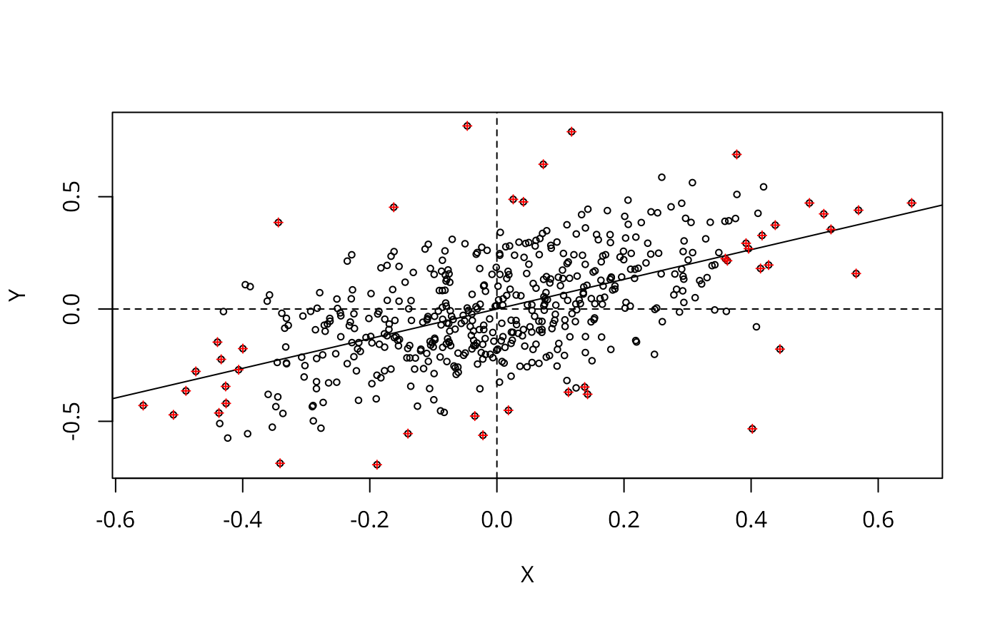

Approximate profile-likelihood estimator (APLE) scatterplot
aple.plot.RdA scatterplot decomposition of the approximate profile-likelihood estimator, and a local APLE based on the list of vectors returned by the scatterplot function.
Usage
aple.plot(x, listw, override_similarity_check=FALSE, useTrace=TRUE, do.plot=TRUE, ...)
localAple(x, listw, override_similarity_check=FALSE, useTrace=TRUE)Arguments
- x
a zero-mean detrended continuous variable
- listw
a
listwobject from for examplespdep::nb2listw- override_similarity_check
default FALSE, if TRUE - typically for row-standardised weights with asymmetric underlying general weights - similarity is not checked
- useTrace
default TRUE, use trace of sparse matrix
W %*% W(Li et al. (2010)), if FALSE, use crossproduct of eigenvalues ofWas in Li et al. (2007)- do.plot
default TRUE: should a scatterplot be drawn
- ...
other arguments to be passed to
plot
Details
The function solves a secondary eigenproblem of size n internally, so constructing the values for the scatterplot is quite compute and memory intensive, and is not suitable for very large n.
Value
aple.plot returns list with components:
- X
A vector as described in Li et al. (2007), p. 366.
- Y
A vector as described in Li et al. (2007), p. 367.
localAple returns a vector of local APLE values.
References
Li, H, Calder, C. A. and Cressie N. A. C. (2007) Beyond Moran's I: testing for spatial dependence based on the spatial autoregressive model. Geographical Analysis 39, pp. 357-375; Li, H, Calder, C. A. and Cressie N. A. C. (2012) One-step estimation of spatial dependence parameters: Properties and extensions of the APLE statistic, Journal of Multivariate Analysis 105, 68-84.
Author
Roger Bivand Roger.Bivand@nhh.no
Examples
# \dontrun{
wheat <- st_read(system.file("shapes/wheat.gpkg", package="spData")[1], quiet=TRUE)
nbr1 <- spdep::poly2nb(wheat, queen=FALSE)
nbrl <- spdep::nblag(nbr1, 2)
#> Warning: lag 2 neighbour object has 2 sub-graphs
nbr12 <- spdep::nblag_cumul(nbrl)
cms0 <- with(as.data.frame(wheat), tapply(yield, c, median))
cms1 <- c(model.matrix(~ factor(c) -1, data=wheat) %*% cms0)
wheat$yield_detrend <- wheat$yield - cms1
plt_out <- aple.plot(as.vector(scale(wheat$yield_detrend, scale=FALSE)),
spdep::nb2listw(nbr12, style="W"), cex=0.6)
lm_obj <- lm(Y ~ X, plt_out)
abline(lm_obj)
abline(v=0, h=0, lty=2)
zz <- summary(influence.measures(lm_obj))
#> Potentially influential observations of
#> lm(formula = Y ~ X, data = plt_out) :
#>
#> dfb.1_ dfb.X dffit cov.r cook.d hat
#> 34 -0.12 0.01 -0.12 0.98_* 0.01 0.00
#> 50 0.10 0.01 0.11 0.98_* 0.01 0.00
#> 60 0.00 0.00 0.00 1.01_* 0.00 0.01
#> 118 0.01 0.01 0.02 1.01_* 0.00 0.01
#> 137 -0.10 -0.01 -0.10 0.98_* 0.01 0.00
#> 143 -0.02 -0.04 -0.05 1.01_* 0.00 0.01
#> 157 -0.10 -0.05 -0.11 0.99_* 0.01 0.00
#> 166 0.00 0.00 0.00 1.02_* 0.00 0.02_*
#> 168 0.01 0.02 0.03 1.01_* 0.00 0.01
#> 176 -0.10 0.17 -0.20_* 0.99 0.02 0.01
#> 177 0.03 -0.07 0.08 1.01_* 0.00 0.01
#> 191 0.01 0.04 0.04 1.02_* 0.00 0.02_*
#> 192 0.10 0.18 0.20_* 0.99 0.02 0.01
#> 201 -0.10 0.07 -0.12 0.99_* 0.01 0.00
#> 216 0.02 0.05 0.05 1.02_* 0.00 0.01_*
#> 217 0.03 0.08 0.09 1.02_* 0.00 0.01_*
#> 225 -0.11 -0.07 -0.13 0.98_* 0.01 0.00
#> 237 -0.10 0.02 -0.10 0.99_* 0.01 0.00
#> 242 -0.02 -0.04 -0.04 1.01_* 0.00 0.01
#> 287 0.14 -0.23 0.27_* 0.97_* 0.04 0.01
#> 290 -0.18 -0.35 -0.40_* 0.95_* 0.08 0.01
#> 295 -0.01 -0.01 -0.01 1.01_* 0.00 0.01
#> 322 0.00 0.00 0.00 1.01_* 0.00 0.01
#> 325 -0.10 -0.07 -0.12 0.99_* 0.01 0.00
#> 351 0.19 -0.04 0.20_* 0.94_* 0.02 0.00
#> 369 0.01 -0.03 0.03 1.01_* 0.00 0.01
#> 376 -0.05 -0.13 -0.14 1.02_* 0.01 0.02_*
#> 392 -0.04 0.08 -0.09 1.01_* 0.00 0.01
#> 393 -0.03 0.06 -0.07 1.01_* 0.00 0.01
#> 394 -0.01 0.03 -0.03 1.01_* 0.00 0.01
#> 402 0.10 0.02 0.10 0.99_* 0.01 0.00
#> 429 0.13 -0.10 0.16 0.98_* 0.01 0.00
#> 430 -0.11 -0.23 -0.25_* 0.99 0.03 0.01
#> 438 0.00 -0.01 -0.01 1.01_* 0.00 0.01
#> 442 -0.01 0.04 -0.04 1.02_* 0.00 0.02_*
#> 443 -0.01 0.02 -0.02 1.02_* 0.00 0.01_*
#> 461 0.02 0.04 0.04 1.01_* 0.00 0.01
#> 462 0.01 0.03 0.03 1.03_* 0.00 0.02_*
#> 466 0.01 -0.02 0.02 1.02_* 0.00 0.01_*
#> 467 -0.03 0.08 -0.08 1.02_* 0.00 0.01_*
#> 468 0.02 -0.04 0.04 1.01_* 0.00 0.01
#> 480 0.13 0.05 0.14 0.97_* 0.01 0.00
#> 488 0.16 0.09 0.18 0.96_* 0.02 0.00
#> 492 -0.13 0.12 -0.17 0.98_* 0.01 0.00
infl <- as.integer(rownames(zz))
points(plt_out$X[infl], plt_out$Y[infl], pch=3, cex=0.6, col="red")

crossprod(plt_out$Y, plt_out$X)/crossprod(plt_out$X)
#> [,1]
#> [1,] 0.6601805
wheat$localAple <- localAple(as.vector(scale(wheat$yield_detrend, scale=FALSE)),
spdep::nb2listw(nbr12, style="W"))
mean(wheat$localAple)
#> [1] 0.6601805
hist(wheat$localAple)
 opar <- par(no.readonly=TRUE)
plot(wheat[,"localAple"], reset=FALSE)
text(st_coordinates(st_centroid(st_geometry(wheat)))[infl,], labels=rep("*", length(infl)))
opar <- par(no.readonly=TRUE)
plot(wheat[,"localAple"], reset=FALSE)
text(st_coordinates(st_centroid(st_geometry(wheat)))[infl,], labels=rep("*", length(infl)))
 par(opar)
# }
par(opar)
# }